This page is dedicated to the postdoctoral researchers with whom I have
had the privilege to work. I have been fortunate to collaborate with
many talented mathematicians at an important stage of their careers,
and I am grateful for the intellectual energy, creativity, and
collegiality they brought to our research community.
The entries below summarize their current or most recently recorded
professional positions. Career information is updated periodically.
Postdoctoral Researchers
1) Misha Rudnev (arXiv papers)
Currently Professor of Mathematics at the University of Bristol.
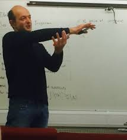
2) Ignacio Uriarte-Tuero (arXiv papers)
Currently Professor of Mathematics at the University of Toronto.
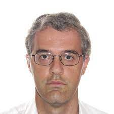
3) Leonid Slavin (arXiv papers)
Currently Professor of Mathematics at the University of Cincinnati.
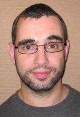
4) Le Anh Vinh (arXiv papers)
Currently Professor of Mathematics at Vietnam National University in Hanoi.
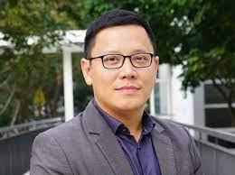
5) Eyvindur Palsson (arXiv papers)
Currently Associate Professor of Mathematics at Virginia Tech.
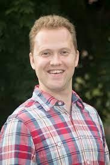
6) Yorgis Petridis (arXiv papers)
Currently Associate Professor of Mathematics at the University of Georgia.
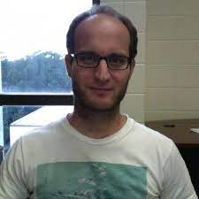
7) Alex Rice (arXiv papers)
Currently Professor of Mathematics at Millsaps College.
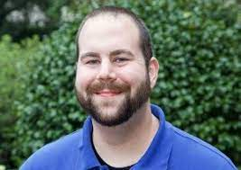
8) Kyle Hambrook (arXiv papers)
Currently Assistant Professor of Mathematics at San Jose State University.
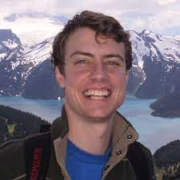
9) Evan Dummit (arXiv papers)
Currently a lecturer at Northeastern University.
10) Thang Pham (arXiv papers)
Currently Professor of Mathematics at Vietnam National University in Hanoi.
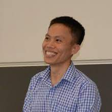
11) Charles Wolf (arXiv papers)
Currently a systems engineering hardware laboratory manager at LSI Corporation.
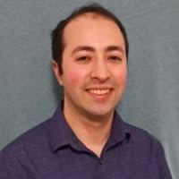
12) Yakun Xi (arXiv papers)
Currently Assistant Professor of Mathematics at Zhejiang University.
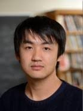
13) Emmett Wyman (arXiv papers)
Currently Assistant Professor of Mathematics at Binghamton University.
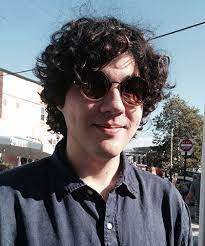
14) Neeraja Kulkarni (arXiv papers)
Currently Visiting Assistant Professor at the University of Rochester.
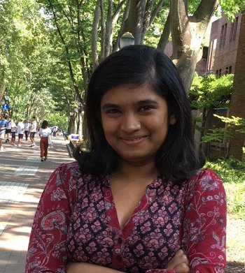
15) Vishal Gupta (arXiv papers)
Currently Visiting Assistant Professor at the University of Rochester.
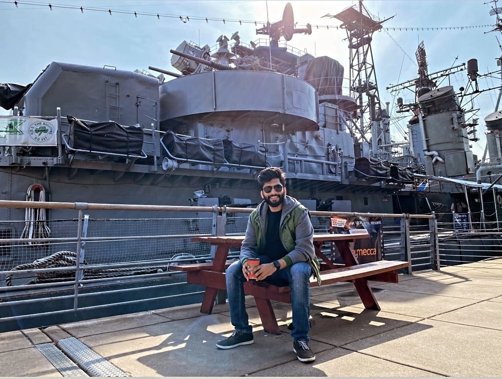
16) Dheer Desai (arXiv papers)
Currently Visiting Assistant Professor at the University of Rochester.
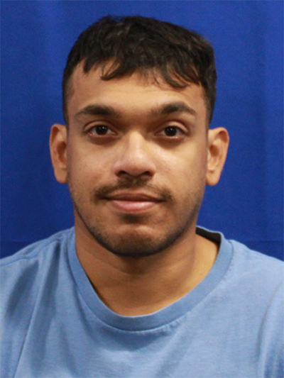
Career Statistics
Postdoctoral researchers with tenure-track positions at
Ph.D.-granting institutions: 9/13 (69%).